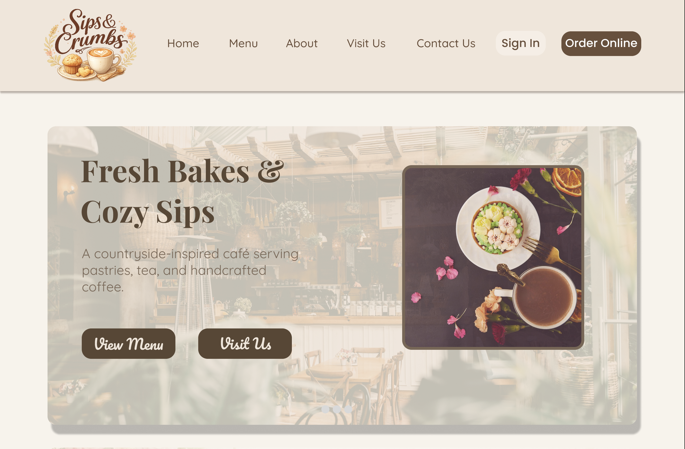
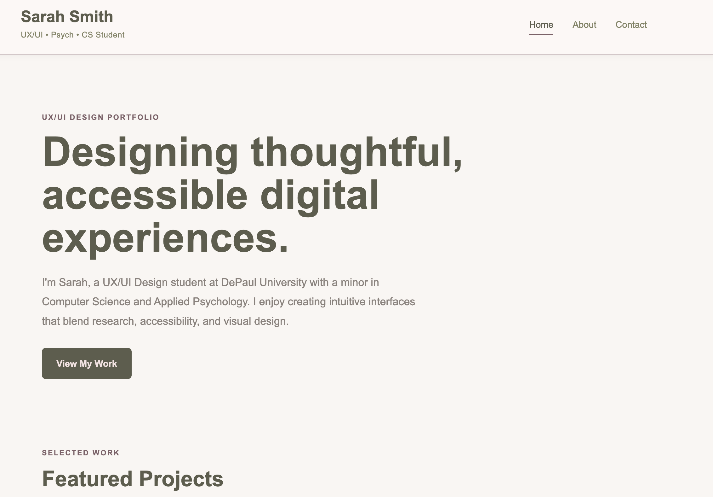

Website Design
Sips and Crumbs
A cozy café website designed to make browsing menu items and placing an order simple and enjoyable.
View ProjectUX/UI • Psych • CS Student
UX/UI DESIGN PORTFOLIO
I'm Sarah, a UX/UI Design student at DePaul University with a minor in Computer Science and Applied Psychology. I enjoy creating intuitive interfaces that blend research, accessibility, and visual design.
View My WorkSELECTED WORK

Website Design
A cozy café website designed to make browsing menu items and placing an order simple and enjoyable.
View Project
UX Case Study
A UX/UI project focused on creating a clear, accessible, and user-friendly digital experience.
View Project